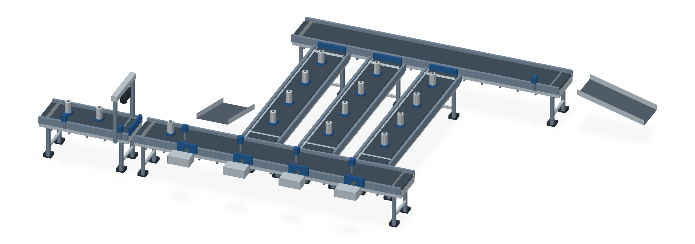

| 교과목명 | [인텔] AI 융합 DX 마스터 클래스 |
|---|---|
| 지도교수 | 김 유 성 |
| 팀 구분 | 3조 |
| 팀 장 | 최예현 |
| 팀 원 | 이순필, 박해준, 정연우, 김동혁 |
v0.10 · 계획서 개정안
본 프로젝트는 PLC·로봇·비전 기반 배터리 조립·검사 공정과 연계하여 셀 입고검사, 등급별 분류 및 매칭 공급을 수행하는 가상 전공정을 구축하는 것을 목적으로 한다. 셀의 합격 여부와 특성에 따른 세트 구성을 구분하여 관리하며, 가상 설비에서 분류 시퀀스와 공급 인터록을 검증한 후 실물 설비 연계 조건을 수립한다.

실측 데이터는 사전 입력 또는 통신 수신 방식으로 연계하며, 실시간 자동 연동 범위는 통신 구성 확정 시 명시한다. 내부저항은 실측 가능 여부에 따라 적용하며, 전압만 확보되는 경우 평가 범위를 세트 내 전압 편차 비교로 한정한다.
| 핵심 관리 지표 | 목표치 | 검증 방법 및 판정 기준 |
|---|---|---|
| 세트 내 전압 편차 | 순서별 구성 대비 50% 이상 감소 (잠정) | 동일 입력 데이터로 두 방식의 세트별 전압 편차 평균을 비교 |
| 분류 정확성 | 100셀 중 오류 0건 | 셀 ID별 판정 등급과 실제 진입 레인 대조 |
| NG 공급 차단 | NG 공급 유출 0건 | NG 및 보류 LOT 셀의 공급 경로 진입 여부 기록 |
| LOT 보류 | 동일 LOT의 세 번째 NG에서 보류 | 보류 전환 시점과 이후 해당 LOT의 NG 분리 확인 |
| 4셀 공급·이력 | 동일 등급 4셀 공급 구성 셀 ID 연결 | 배출 수량·출구 감지·수신 확인 및 세트별 셀 ID 대조 |
세트 편차(mV) = 세트 내 최대 전압 - 최소 전압
감소율(%) = (순서별 평균 편차 - 등급별 평균 편차) ÷ 순서별 평균 편차 × 100
평가 시 입력 순서, 등급 구간, 비교 세트 수 및 잔여 셀 수를 기록한다. 순서별 평균 편차가 0인 경우 감소율을 산출하지 않고 편차값을 제시한다. 50% 감소는 잠정 목표로서 실측 분포와 최초 비교 시험을 근거로 적정성을 검토한다. 본 평가는 전압 편차에 한정하며 팩 수명 및 실제 불량률 개선의 입증 자료로 사용하지 않는다.
분류 및 공급의 완료 여부는 실제 진입 레인과 배출 수량을 기준으로 판정한다. 제어 신호의 발생만으로 공정 완료를 판정하지 않는다.
| 구분 | 성명 | 담당 범위 |
|---|---|---|
| 팀장 | 최예현 | 일정·범위 관리, 세트 구성, LOT 보류, 실물 설비 연계 |
| 팀원 | 이순필 | 셀 추적, 검사·등급 판정, PLC 분류 로직 |
| 팀원 | 박해준 | Factory I/O 배치, 태그 연결, 설비 동작 검증 |
| 팀원 | 정연우 | 통신·수집기, DB 및 이력 조회 화면 |
| 팀원 | 김동혁 | 실측, 시험 기록, 보고서·발표 자료 |
상기 역할 분담은 기존 배정안을 기준으로 하며, 팀 회의를 거쳐 최종 확정한다.
NG 판정 조건은 전압 미달, 내부저항 적용 시 기준 초과, LOT 미판독 및 보류 LOT로 구성한다. 등급 구간과 적용 검사값은 실측 결과에 따라 확정한다. 이상 복구 시 부품 위치와 내부 재고를 대조하여 중복 투입을 방지한다.
파란 테두리: 3조 설계 범위 / 회색: 연계 대상 / 점선: 통신·인터록 협의 대상
| 시스템 구성 | 교환 데이터 및 제어 신호 | 인터페이스 검증 항목 |
|---|---|---|
| 가상 설비 ↔ PLC | 센서·LOT 판독값 / 컨베이어·푸셔·블레이드 명령 | 신호 방향, 태그 중복, 통신 단절 시 동작 |
| 실물 설비 ↔ PLC | 검사 결과·준비 상태 / 공급 요청·수신 확인 | 실물 공정 담당 범위와 공급 허가 조건 |
| PLC ↔ 수집기 → DB·화면 | 셀 ID·세트 ID·등급·재고·이상·공급 이벤트 | 값의 갱신 주기, 이벤트 누락·중복, 조회 항목 |
상기 도식은 전체 시스템의 기능 및 신호 연결을 정의하는 설계안이다. 전기 단자 결선도, 실물 통신 경로 및 로봇·비전 접속 방식은 기존 설비 구성 확인 후 확정한다. 가상 부품의 이동과 실물 배터리의 자동 반송은 구분하여 관리한다.
인터페이스는 설비 I/O, 공급 승인 인터록 및 이력 데이터로 구분한다. 아래 I/O 주소는 가상 설비 시연 기준이며, 공용 PLC 적용 전 기존 태그와의 중복 여부를 검증한다.
| 신호 구분 | 현재 가상 설비 연결 | 내용 |
|---|---|---|
| 비트 입력 19점 | Coils 0~18 → M1000~M1018 | 위치 검출 7점, 푸셔 끝 센서 8점, 조작반 4점 |
| 비트 출력 20점 | M1100~M1119 → Discrete Inputs 0~19 | 컨베이어·푸셔·블레이드·투입·회수·표시등 |
| LOT 판독 1점 | Holding Register 0 → D1000 | 가상 비전 판독값을 LOT 구분에 사용 |
| 시뮬레이션 상태 | Coils 19 / 20 / 21 | 실행 / 일시정지 / 씬 초기화 |
| 담당 구간 | 관리 단위·필드 | 연결 목적 |
|---|---|---|
| 3조 · 전공정 | 셀 ID, LOT, 전압, 적용 시 내부저항, 판정 등급 | 셀별 검사·분류 결과 추적 |
| 3조 → 실물 설비 | 세트 ID, 구성 셀 ID 4개, 공급 상태 | 4셀 구성과 수신 확인 대조 |
| 실물 설비 → 4조 | 제품 ID, LOT, 초기 전압, 검사 결과 | 4조 에이징·특성검사의 기준 데이터 |
| 4조 · 후공정 | 제품 ID, 재검 횟수, 박스 ID | 재검 이력 및 포장 단위 추적 |
후공정 범위 및 데이터 구성은 4조 계획서를 참고하되, 해당 문서의 수치 목표·계측 기준·디바이스 번호는 3조의 확정 규격에 포함하지 않는다. 전압 단위와 데이터 입력·수신 방식은 공동 인계 규격에 명시한다.
4조 계획서의 명시 주소와 3조 PoC의 생성 래더를 대조한 결과, 내부 릴레이 및 데이터 레지스터 일부가 중복된다. 별도 제어기에서는 독립적으로 사용할 수 있으나, 동일 PLC에 통합할 경우 주소 재배정이 필요하다.
| 중복 주소 | 3조 현재 PoC 용도 | 4조 계획서 용도 |
|---|---|---|
| M0 | 운전 자기유지 | 비상정지 |
| M10 | 입고 요청 | 반입·바코드 스캔 |
| M200 | LOT 보류 영역의 시작 주소 | 자동창고 운전 |
| D200 | 임시 전압 표의 시작 주소 | 자동창고 랙 번호 |
| 구분 | 현재 PoC 예시 | 통합 적용 제안 |
|---|---|---|
| 순차 제어·LOT 관리 | M0 / M10 / M200 | M3000 / M3010 / M3200 |
| 가상 센서·액추에이터 | M1000~M1018 / M1100~M1119 | M4000~M4018 / M4100~M4119 |
| 판정·검사 데이터 | D200 / D1000 | D3200 / D4000 |
| 3조 내부 디바이스 예약안 | 현재 PoC는 저주소 영역 포함 | M3000~M4999 / D3000~D4999 |
상기 주소는 통합 설계를 위한 제안이며 현재 PoC에는 적용하지 않았다. 4조 계획서에 명시된 주소와 분리한 안으로, 실제 PLC의 지원 범위와 기존 설비·타 조 전체 태그맵을 확인한 후 확정한다. 타이머·카운터·인덱스 영역도 별도로 대조한다.
| 구분 | 규격·용도 | 확보·적용 계획 |
|---|---|---|
| PLC | Mitsubishi MELSEC Q03UDE / 순차 제어·연계 | 공용 장비 사용 예정 |
| 가상 설비 | Factory I/O Modbus & OPC 에디션 | 기설치 / 전공정 배치 |
| 제어 프로그램 | GX Works2 / 실제 PLC 프로그램 검증 | 기설치 / 변환·컴파일 |
| 수집·이력 | Python, DB, 웹 조회 화면 | 직접 구성 / 상세 기술 확정 |
| 검사 데이터 | 18650 셀 전압 및 적용 시 내부저항 | 실측 가능 항목·수량 확인 |
| PC | Windows / 가상 설비·수집·화면 실행 | 보유 장비 1대 |
추가 장비의 수량 및 단가는 사양 확인 후 산정한다. 통신 경로는 OPC 서버 확보 여부와 공용 PLC의 운영 환경을 기준으로 결정한다.
| 구성 요소 | 수량 | 역할 |
|---|---|---|
| 컨베이어 | 6 | 입고 1, 메인 1, 등급 레인 3, 공급 1 |
| 푸셔 / 스톱 블레이드 | 4 / 4 | NG·등급 분류 / 검사 위치·레인 끝 정지 |
| 검출 센서 / 가상 비전 | 7 / 1 | 위치·출구 감지 / LOT 판독 |
| 투입기 / 회수기 / 슈트 | 1 / 2 / 2 | 가상 셀 입고 / NG·공급 경로 회수 |
2026년 11월 17일 작업 기록을 기준으로, 임시 검사값을 적용한 소프트 PLC 시연에서 씬 로드, 통신 및 분류 동작을 관찰하였다. 4셀 공급 통합 시험과 실물 PLC 연계는 후속 검증 범위이며, 수집기·DB·조회 화면은 개발 예정이다.
| 시험 구간 | 기대 동작 | 기록 자료 |
|---|---|---|
| 검사 → 분류 | 판정 등급과 실제 레인 일치 | 셀 ID·입력값·판정·진입 레인 대조표 |
| 버퍼 → 공급 | 4셀 확보 후 허가 조건에서만 배출 | 실제 수량·출구 감지·수신 ID·시간 |
| LOT·이상 처리 | 보류 LOT 격리, 이상 시 정지 | NG 누계·보류 시점·복구 전후 상태 |
| 수집 → 조회 | 셀·세트 이력 연결, 누락·중복 확인 | DB 저장값·조회 결과·수정 기록 |
실측 데이터 비교 결과와 임시값 기반 제어 시험 결과는 구분하여 관리한다. 각 시험에는 입력 조건, 기대 동작, 실제 결과 및 수정 이력을 기록한다.
추진 기간: 2026. 11. 17 ~ 2026. 12. 8 / 3조
| 계획 기간 | 단계 및 주요 활동 | 선행 조건·조정 기준 |
|---|---|---|
| 11/17~11/19 | 범위·역할·인계 규격 설계 / 실측·통신 경로 확인 | 수업 시간표와 장비 사용 가능 시간 확인 |
| 11/23~11/25 | 가상 전공정 배치 / 검사·분류 제어 구현 | 실습 가능 시간에 따라 배치·제어 작업 분담 |
| 11/26~12/1 | 세트 공급·이력 연계 / 비교 측정·통합 검증 | 조별 인터페이스 확정 및 장비 사용 시간 확보 |
| 12/7~12/8 | 미완료 검증 보완 / 시연·보고서·발표 | 수업·제출 일정에 맞춰 검증 범위 확정 |
기간별 작업 범위와 아래 완료 시점은 잠정 목표이다. 전일 작업량이나 프로젝트 전용 시수의 배정을 의미하지 않는다.
| 추진 일정 | 단계별 완료 및 검증 기준 |
|---|---|
| 11/19 | 실물 통신 경로, 조별 담당 범위·인계 단위·ID 대응 규칙 결정 |
| 11/25 | 가상 배치 및 센서·블레이드·푸셔 동작 확정 |
| 11/27 | 분류 정확성·NG 유출·세트 내 전압 편차의 첫 측정 결과 |
| 12/1 | 기능 동결, 4셀 공급·수신 확인·이력 조회의 통합 시험 결과 |
| 12/7~12/8 | 시연 리허설, 최종 보고서·발표 자료 제출 |
실물 셀 수량, 검사 항목, 공용 PLC 주소 및 조별 인계 규격을 사전 확정한다. 수업 진행과 장비 사용 가능 시간에 따라 주별 가용 시간을 산정하고 검증 필수 항목을 우선 배정한다. 통신 확보 또는 수업 일정에 변동이 발생하면 완료 목표와 평가 범위를 조정하여 최종 산출물에 반영한다.